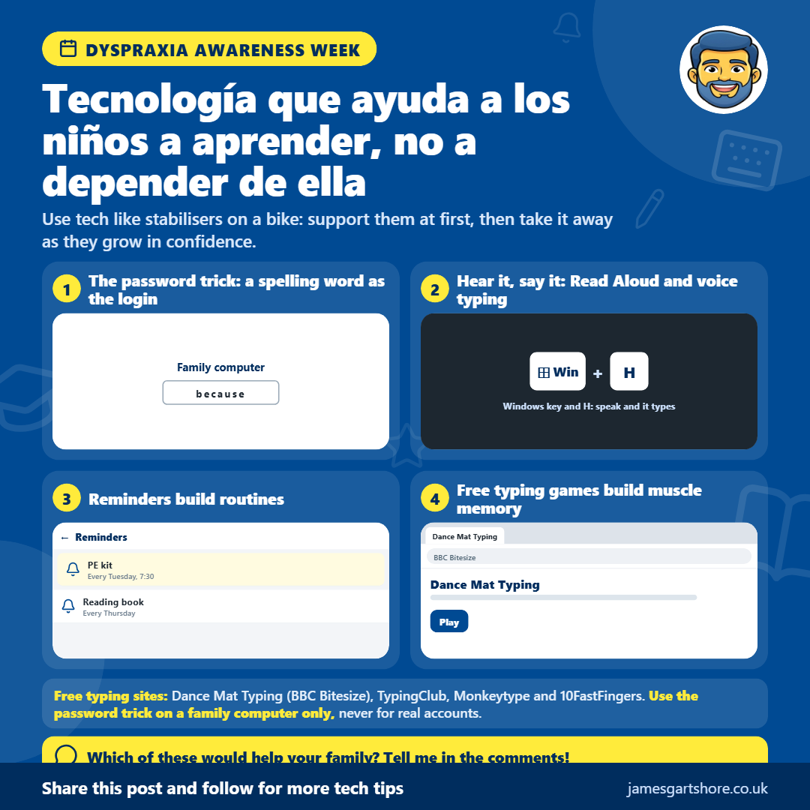

Semana de Dispraxia
Por James Gartshore · · Salud y bienestar
See the old version of this poster
 Download the old version
Download the old version
Hola a todos, esta semana es la Semana de Concienciación sobre la Dispraxia, así que quería compartir algunas formas en que la tecnología puede ayudar a los niños con dispraxia. La idea es usar la tecnología para ayudarles a aprender, en lugar de algo en lo que terminen dependiendo.
La dispraxia afecta a la coordinación y el movimiento, y puede hacer que cosas como la escritura, la ortografía y mantenerse organizado sean más difíciles. La buena noticia es que los teléfonos y las computadoras tienen muchas herramientas gratuitas que pueden ayudar, siempre que se usen de la manera correcta.
Un truco sencillo para la ortografía es hacer que una palabra que a tu hijo le resulte difícil sea la contraseña de inicio de sesión para una computadora familiar, con la palabra escrita en una nota cercana. Como la escriben todos los días, empezarán a revisar la nota cada vez menos, hasta que un día ya no la necesitarán en absoluto. Luego, quita la nota y elige una palabra nueva. Solo haz esto en una computadora familiar, nunca para el correo electrónico, banca o cuentas reales, ya que una sola palabra es fácil de adivinar.
Escuchar palabras también puede ayudar. Tanto Microsoft Edge como Word tienen una función gratuita de Lectura en voz alta que lee el texto mientras resalta cada palabra, para que los niños puedan seguir el ritmo. También funciona al revés. Con la escritura por voz, pueden decir una palabra y ver cómo aparece en la pantalla, lo que ayuda a vincular cómo suena una palabra con cómo se escribe. En un ordenador con Windows, presione la tecla de Windows y H al mismo tiempo, y en un teléfono, toque el micrófono del teclado.
Escribir suele ser más fácil que la escritura a mano para los niños con dispraxia, y los tests de mecanografía son una gran manera de practicar. Como usan palabras reales, escribiéndolas una y otra vez se construye la memoria muscular, hasta que escribirlas se vuelve natural sin pensar. BBC Bitesize Dance Mat Typing es genial para principiantes, TypingClub tiene lecciones gratuitas paso a paso, y Monkeytype y 10FastFingers permiten a los niños mayores probar su velocidad e intentar superar su mejor puntuación.
Mantenerse organizado también puede ser un desafío, y los recordatorios del teléfono y las listas de verificación sencillas pueden ayudar a los niños a crear rutinas, como un recordatorio para el equipo de educación física el martes. Con el tiempo, muchos descubren que lo recuerdan sin necesidad del recordatorio.
La mejor manera de verlo es como los estabilizadores de una bicicleta. Use la tecnología para apoyarlos al principio, y luego vaya quitándola gradualmente a medida que su confianza crezca.
Si desea ayuda para configurar cualquiera de esto, simplemente envíeme un mensaje y haré todo lo posible para ayudarle.
Espero que esto te sea útil, y no dudes en compartirlo con cualquiera que pueda encontrarlo útil.